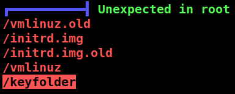
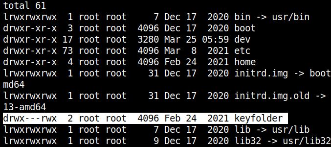

5.3 Linux enumeration using linpeas.sh
1. Installing LinPEAS.
LinPEAS is a script that search for possible paths to escalate privileges on Linux/Unix*/MacOS hosts. The checks are explained on book.hacktricks.xyz.
2. On your Kali Machine create a “linpeas.sh” file with content of https://raw.githubusercontent.com/carlospolop/privilege-escalation-awesome-scripts-suite/master/linPEAS/linpeas.sh.
3. Copy the file to the victim's "/tmp' directory.
kali@kali:$scp linpeas.sh gill@192.168.12.45:/tmp
4. Connet via SSH to the victim's machine.
User: gill
Password: 59583hello
kali@kali:$ssh gill@192.168.12.45
5. Change the “linpeas.sh” file permissions.
gill@driftingblues:~$cd /tmp
gill@driftingblues:/tmp$chmod +x linpeas.sh
gill@driftingblues:/tmp$chmod +x linpeas.sh
6. Run “linepeas.sh” file with output file.
gill@driftingblues:/tmp$./linpeas.sh | tee output
Output:

There's an unexpedted dir in root.
7. List the root directory.
gill@driftingblues:/$ls -l
Output:

Other users than “root” can write on the directory.